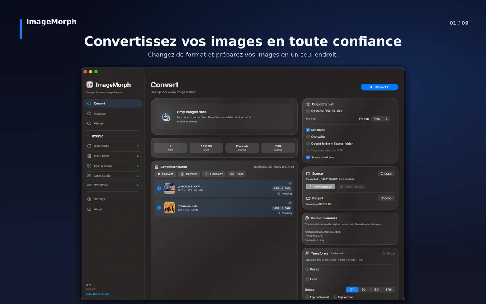
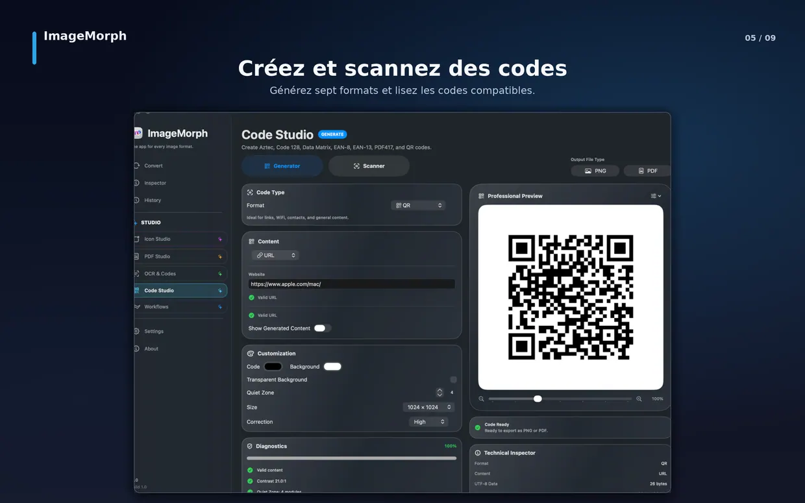
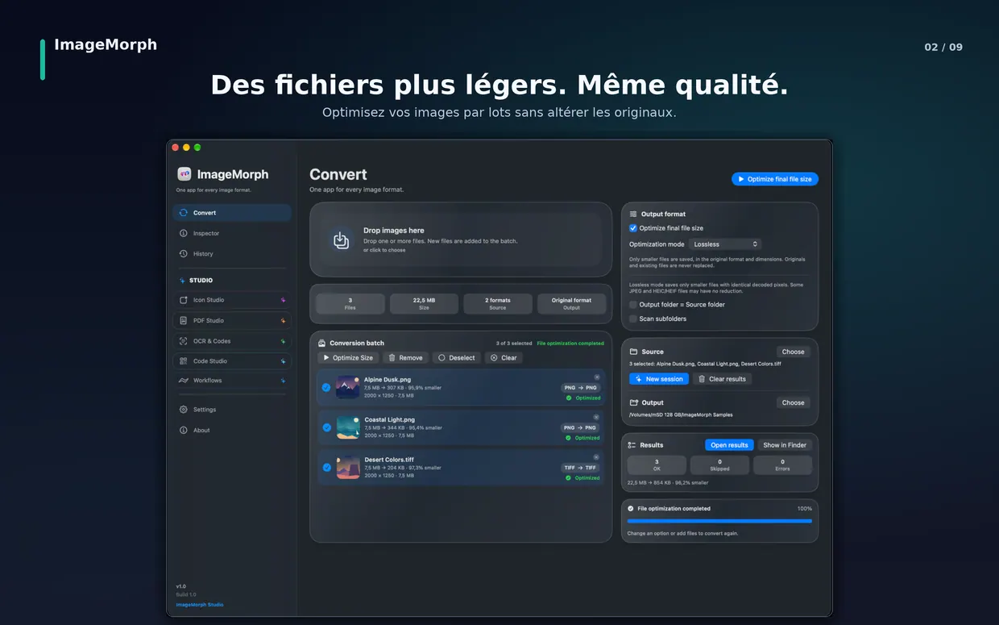
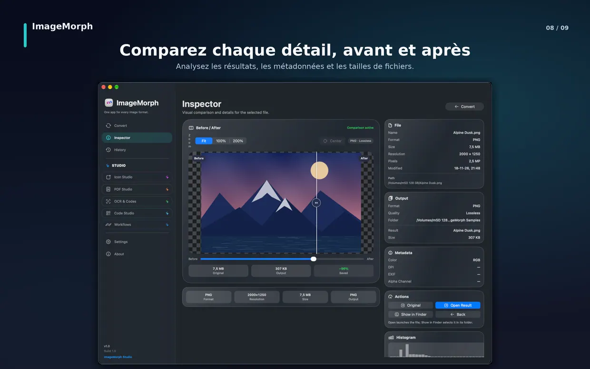
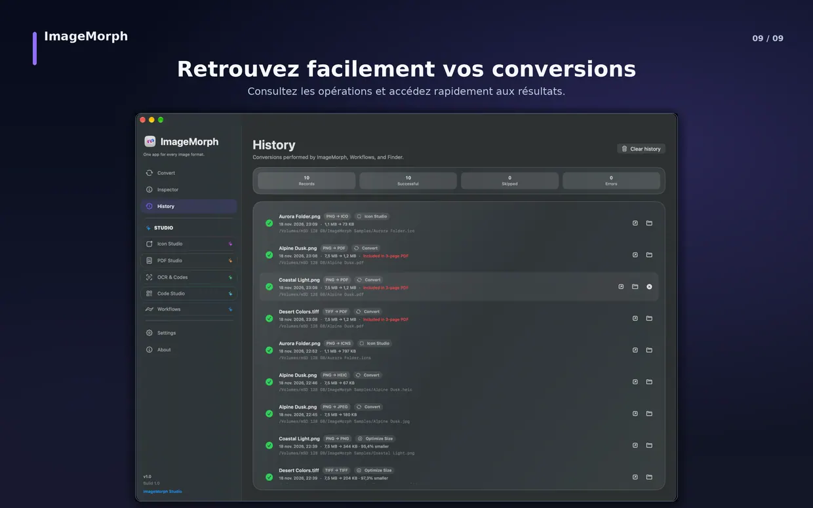
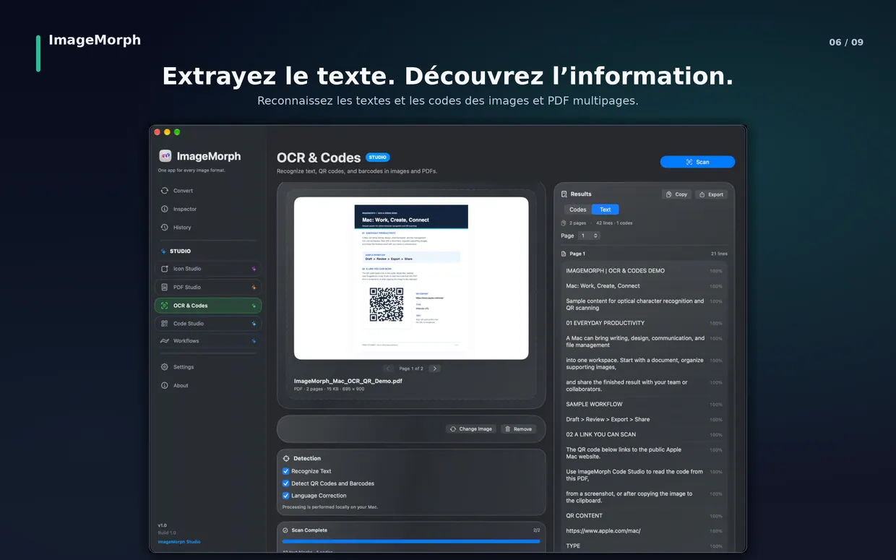
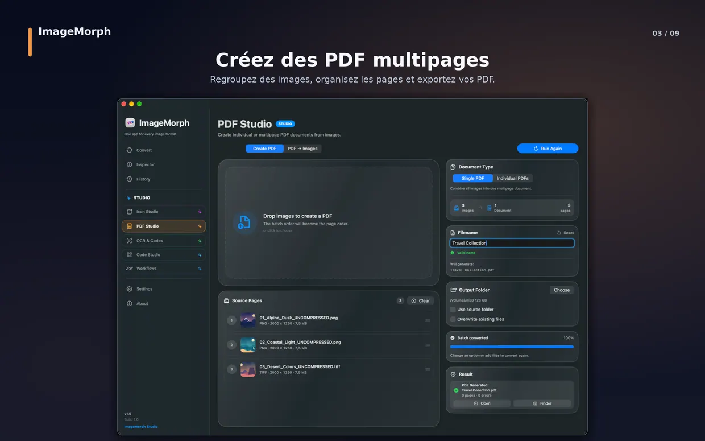
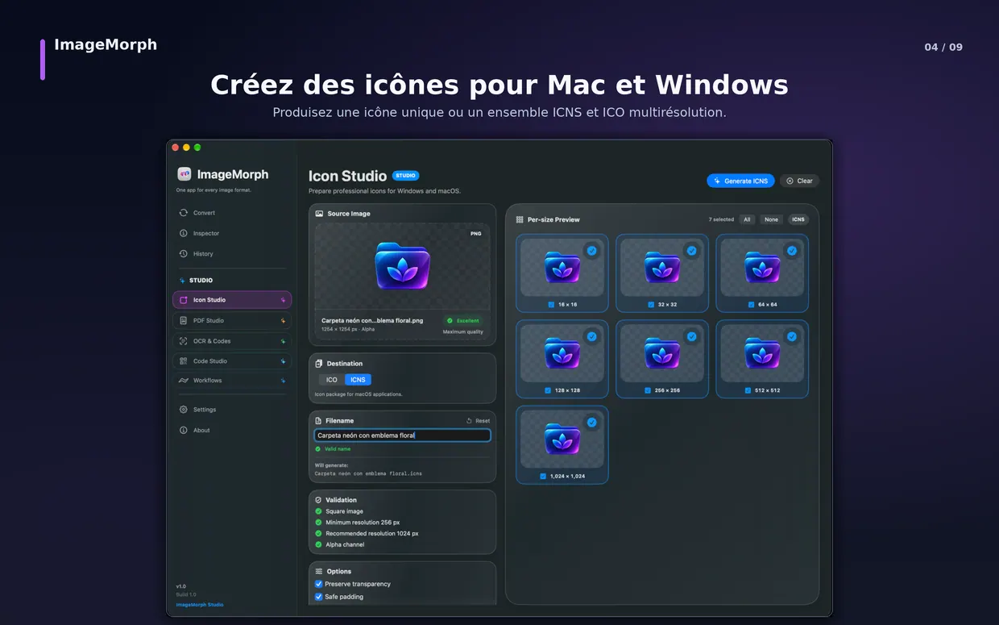
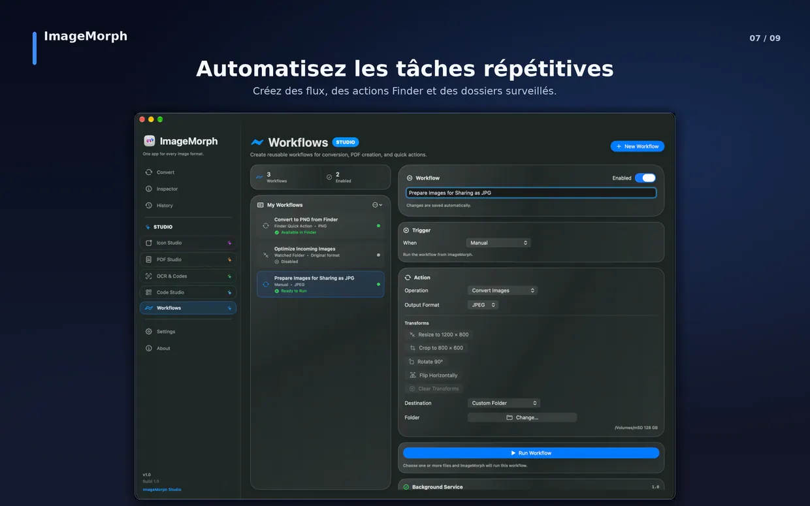

JPEG · PNG · HEIC · TIFF
Formats courants JPEG, PNG, HEIC et TIFF, seuls ou par lots.

Convertissez, redimensionnez et optimisez des images. Créez des PDF et automatisez les tâches répétitives sur Mac.
Lancement sur le Mac App Store en préparation.

Convertissez, redimensionnez et optimisez des images. Créez des PDF et automatisez les tâches répétitives sur Mac.

Reconnaissez le texte des images et PDF multipages, vérifiez et exportez les résultats.
Lisez les QR reçus par e-mail ou dans un PDF sur votre Mac, puis examinez l’adresse de destination avant de l’ouvrir.


L’aperçu d’une URL ne garantit pas la sécurité du site. Vérifiez le domaine et protégez vos informations personnelles.
Explorer les outils de codesFormats courants JPEG, PNG, HEIC et TIFF, seuls ou par lots.

Modifiez les dimensions et proportions de vos images selon vos besoins, en préservant le rapport d’aspect lorsque nécessaire.

Optimisation sans perte ou avec perte selon le format ; sortie uniquement si elle est plus petite.

Consultez le format, les dimensions et les métadonnées. Après conversion, comparez le résultat à l’original.

Retrouvez les opérations récentes et ouvrez leurs fichiers ou affichez-les dans le Finder s’ils existent encore.

Studio réunit l’OCR, la lecture de codes, les outils PDF, les icônes et l’automatisation. Achat unique, sans abonnement.
Studio est un achat intégré facultatif et permanent.

Reconnaissez le texte des images et PDF multipages, vérifiez et exportez les résultats.


Lisez des codes depuis le presse-papiers, des images, des PDF ou des dossiers, ou capturez-les avec des appareils compatibles. Vérifiez leur contenu et leurs liens avant de les ouvrir.


Créez des PDF multipages, exportez des pages en images et réglez la sélection et la rotation.

Générez des fichiers ICO et ICNS et contrôlez les tailles avant exportation.


Créez des codes QR, Code128, Data Matrix, EAN, PDF417 et Aztec en PNG ou PDF.

Enregistrez des flux, surveillez des dossiers et lancez des actions Finder.

Studio est un achat intégré facultatif et permanent.
Questions sur Studio| Fonction | Free | Studio |
|---|---|---|
| Conversion, dimensions, optimisation | Inclus | Inclus |
| File, Inspecteur, comparaison, histogramme | Inclus | Inclus |
| Création de PDF de base | Inclus | Inclus |
| PDF Studio et export de pages en images | — | Inclus |
| OCR et reconnaissance de codes | — | Inclus |
| Génération de codes et capture caméra/scanner | — | Inclus |
| Jeux ICO et ICNS | — | Inclus |
| Flux, dossiers surveillés, actions rapides Finder | — | Inclus |
Le prix local, l’accès Studio et l’éligibilité à l’essai s’affichent dans l’app. Achats et restaurations passent par Apple.
La conversion, l’optimisation, la création de PDF et l’OCR s’effectuent sur votre Mac. Le contenu des fichiers n’est pas transmis au service d’essai Studio. L’accès aux fichiers, dossiers, caméras et scanners exige une autorisation ; réglages, historique, signets et journaux contenant noms, chemins ou erreurs peuvent rester locaux.
Lire la politique de confidentialité